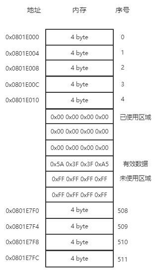

STM32内部Flash使用磨损均衡算法(Erase Leveling)#
STM32内部Flash的写寿命大约是1万次，假如我们在其Flash中存储数据，每天100次写操作，100天后Flash就无法继续可靠使用了， 本文采取了一种非常简单的方法，将Flash的使用寿命延长了1024倍（仅限本文试验环境下）。
1. 设计思路#
本实验以一页Flash的操作为例。我们按照特定格式将数据一条一条的写进Flash，在写入新的数据前将旧数据清零， 保证Flash中有效数据的唯一性，直到本页写满后，才将本页擦除，故极大的延长了Flash的使用寿命。
- 芯片：STM32F103ZET6
- 软件：STM32CubeHAL
- Flash Page Size：2K
- 使用Flash的一页Page60(0x0801E000 ~ 0x0801E800(不包含))进行磨损均衡算法试验
-
数据帧格式：
|0x5A|data1|data2|0xA5| -
本实验Flash存储模型如下：

- 首先将Page60擦除，擦除后Page60页中的数据全为1。
- 每次写入数据时，会顺次寻找数值FF（未写入数据的），找到后写入数据，同时将先前的有效数据置为0，若未找到FF，则表明数据已写满，将擦除整页，从头开始写
- 每次读出数据时，会顺次寻找数值5A（有效数据），然后读出4个字节，若未找到数值5A，则返回错误码0
2. 实现代码#
一共有3个文件，flash_wear_leveling.h、flash_wear_leveling.c和example.c，flash_wear_leveling.h和flash_wear_leveling.c是 磨损均衡算法的实现，example.c是使用举例。
- flash_wear_leveling.h
1 2 3 4 5 6 7 8 9 10 11 12 13 14 15 16 17 18 19 20 21 22 23 24 25 26 27 28 29 30 31 32 33 34 35 36 37 38 39 40 | #ifndef __FLASH_H__
#define __FLASH_H__
#include "stm32f1xx_hal.h"
#define FLASH_START_ADDRESS 0x0801E000
#define PAGE_SIZE (uint32_t)FLASH_PAGE_SIZE /* Page size */
#define WT_GET_NEW_ADDR (1<<0)
#define WT_GET_USED_ADDR (1<<1)
typedef union
{
uint8_t buff[4];
uint32_t data;
}flash_pack_u;
typedef struct
{
uint32_t flash_start_address;
uint32_t current_addr;
uint32_t new_addr;
uint16_t page_size;
flash_pack_u buff;
}flasher_t;
typedef union
{
uint8_t data[2];
uint16_t data16;
}writer_u;
void flash_init(void);
void easer_flash(void);
void find_new_entry(void);
uint32_t find_used_entry(void);
void write_word_to_flash(writer_u writer);
#endif
|
- flash_wear_leveling.c
1 2 3 4 5 6 7 8 9 10 11 12 13 14 15 16 17 18 19 20 21 22 23 24 25 26 27 28 29 30 31 32 33 34 35 36 37 38 39 40 41 42 43 44 45 46 47 48 49 50 51 52 53 54 55 56 57 58 59 60 61 62 63 64 65 66 67 68 69 70 71 72 73 74 75 76 77 78 79 80 81 82 83 84 85 86 87 | #include <drv_flash.h>
extern void FLASH_PageErase(uint32_t PageAddress);
static flasher_t flasher;
void flash_init(void)
{
flasher.flash_start_address = FLASH_START_ADDRESS;
flasher.page_size = FLASH_PAGE_SIZE;
flasher.current_addr = FLASH_START_ADDRESS;
}
void easer_flash(void)
{
/* -1- Unlock the Flash Bank Program Erase controller */
HAL_FLASH_Unlock();
/* -2- Clear All pending flags */
__HAL_FLASH_CLEAR_FLAG(FLASH_FLAG_EOP | FLASH_FLAG_WRPERR | FLASH_FLAG_PGERR);
/* -3- erase the FLASH pages */
FLASH_PageErase(FLASH_START_ADDRESS);
FLASH_WaitForLastOperation(FLASH_TIMEOUT_VALUE);
CLEAR_BIT(FLASH->CR, FLASH_CR_PER);
/* -5- Lock the Flash Bank Program Erase controller */
HAL_FLASH_Lock();
}
void find_new_entry(void)
{
while(flasher.current_addr < flasher.flash_start_address+flasher.page_size)
{
flasher.buff.data = read_word_from_flash(flasher.current_addr);
if(flasher.buff.buff[0] == 0xFF)
{
flasher.new_addr = flasher.current_addr;
return;
}
flasher.current_addr += 4;
}
if(flasher.current_addr >= flasher.flash_start_address+flasher.page_size)
{
easer_flash();
flasher.current_addr = flasher.flash_start_address;
flasher.new_addr = flasher.flash_start_address;
}
}
uint32_t find_used_entry(void)
{
while(flasher.current_addr < flasher.flash_start_address+flasher.page_size)
{
flasher.buff.data = read_word_from_flash(flasher.current_addr);
if(flasher.buff.buff[0] == 0x5A)
{
return flasher.buff.data;
}
flasher.current_addr += 4;
}
return 0;
}
void write_word_to_flash(writer_u writer)
{
flash_pack_u buf;
buf.buff[0] = 0x5A;
buf.buff[1] = writer.data[0];
buf.buff[2] = writer.data[1];
buf.buff[3] = 0xA5;
find_new_entry();
HAL_FLASH_Unlock();
if(flasher.new_addr-4 >= flasher.flash_start_address)
{
HAL_FLASH_Program(FLASH_TYPEPROGRAM_WORD,flasher.new_addr-4,0x00);
}
HAL_FLASH_Program(FLASH_TYPEPROGRAM_WORD,flasher.new_addr,buf.data);
HAL_FLASH_Lock();
}
|
- example.c
1 2 3 4 5 6 7 8 9 10 11 12 13 14 15 16 17 18 19 20 21 22 23 | /*
* 首先确保你要操作的的Flash区域是刚擦除过的(全为1)，为实现这个目的，你可以只调用easer_flash()函数，将特定的flash page擦除，
* 当然你需要先调用flash_init()函数设置flash page的首地址
* 数据帧格式为 |0x5A | data1 | data2 | 0xA5|
* 每次写入数据时，会顺次寻找数值FF（未写入数据的），找到后写入数据，同时将先前的有效数据置为0，若未找到FF，则表明数据已写满，将擦除整页，从头开始写
* 每次读出数据时，会顺次寻找数值5A（有效数据），然后读出4个字节，若未找到数值5A，则返回错误码0
*
*/
int main()
{
// write data into flash
writer_u writer;
writer.data[0] = 0x11;
writer.data[1] = 0x22;
write_word_to_flash(writer);
// then read it from flash and print it
flash_pack_u flash_pack;
flash_pack.data = find_used_entry();
usart1_printf("%x %x\n",flash_pack.buff[1]);
usart1_printf("%x %x\n",flash_pack.buff[2]);
}
|